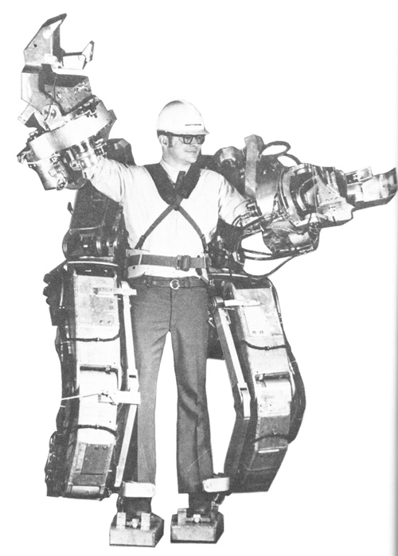
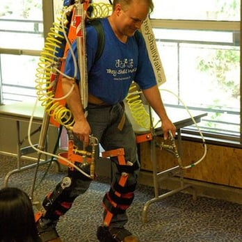
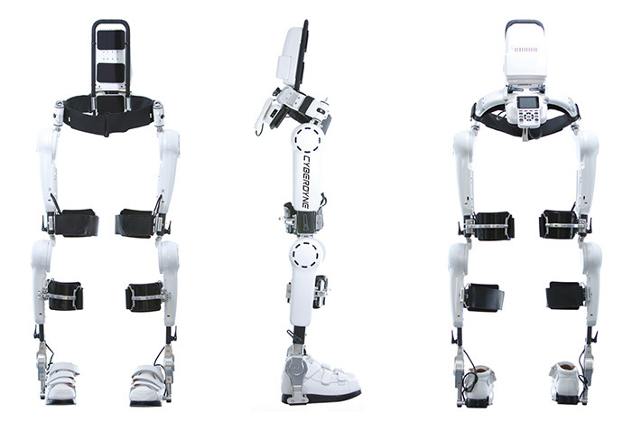
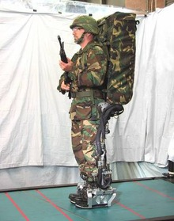
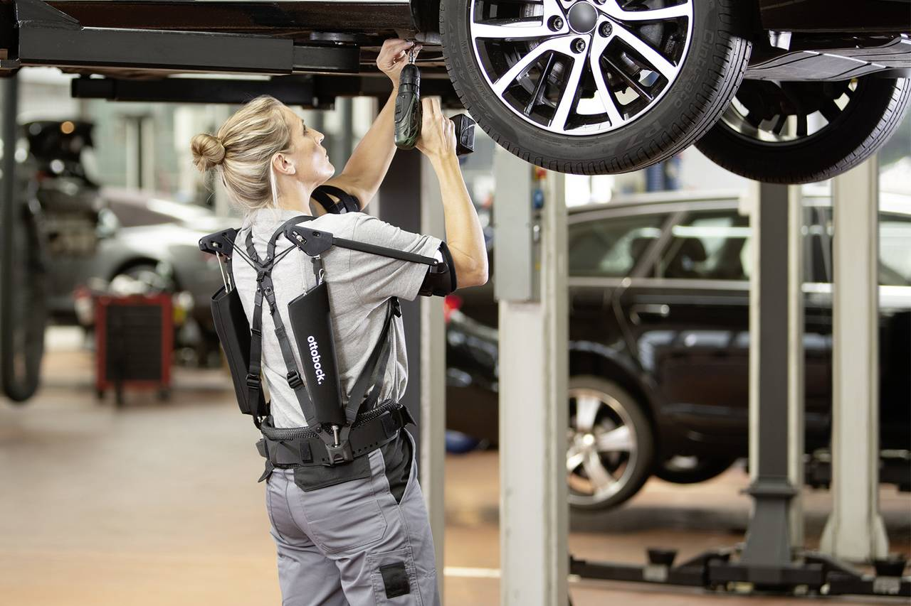

WELCOME TO
Stryder
In stryder you will learn about powered exoskeletons:
What is an exoskeleton?
A powered exoskeleton, is a mobile machine that is wearable over all or part of the human body, providing ergonomic structural support and powered by a system of electric motors, pneumatics, levers, hydraulics or a combination of cybernetic technologies, while allowing for sufficient limb movement with increased strength and endurance.

HISTORY
What was the first exoskeleton?
In 1917, United States inventor Leslie C. Kelley developed what he called a pedomotor, which operated on steam power with artificial ligaments acting in parallel to the wearer's movements. This system was able to supplement human power with external power.

Hardiman
In the 1960s, the first true 'mobile machines' integrated with human movements began to appear. A suit called Hardiman was co-developed by General Electric and the US Armed Forces. The suit was powered by hydraulics and electricity and amplified the wearer's strength by a factor of 25, so that lifting 110 kilograms (240 lb) would feel like lifting 4.5 kilograms (10 lb). A feature called force feedback enabled the wearer to feel the forces and objects being manipulated.
Lifesuit
In 1986, an exoskeleton called the Lifesuit was designed by Monty Reed, a US Army Ranger who had broken his back in a parachute accident. While recovering in the hospital, he read Robert Heinlein's science fiction novel Starship Troopers, and Heinlein's description of mobile infantry power suits inspired Reed to design a supportive exoskeleton. In 2001, Reed began working full-time on the project, and in 2005 he wore the 12th prototype in the Saint Patrick's Day Dash foot race in Seattle, Washington.
USES
Medical
In medical application, e.g. with complete paraplegia after spinal cord injury, an exoskeleton can be an additional option for the supply of aids if the structural and functional properties of the neuromuscular and skeletal system are too limited to be able to achieve mobilization with an orthosis.
Military
Developing a full-body suit that meets the needs of soldiers has proven challenging. The Defense Advanced Research Projects Agency (DARPA) launched the Warrior Web program in September 2011 and has developed and funded several prototypes, including a "soft exosuit" developed by Harvard University's Wyss Institute.
Industry
Passive exoskeleton technology is increasingly being used in the automotive industry, with the goal of reducing worker injury (especially in the shoulders and spine) and reducing errors due to fatigue. They are also being examined for use in logistics.
